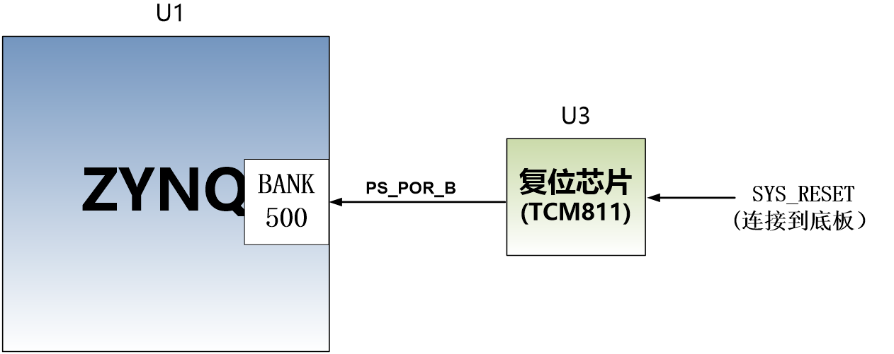
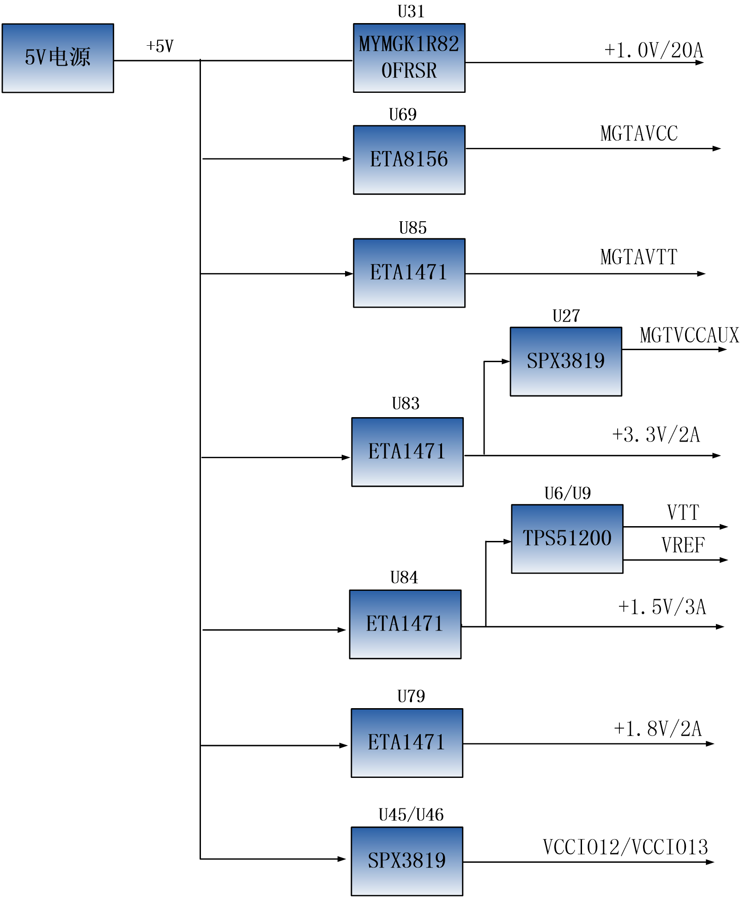
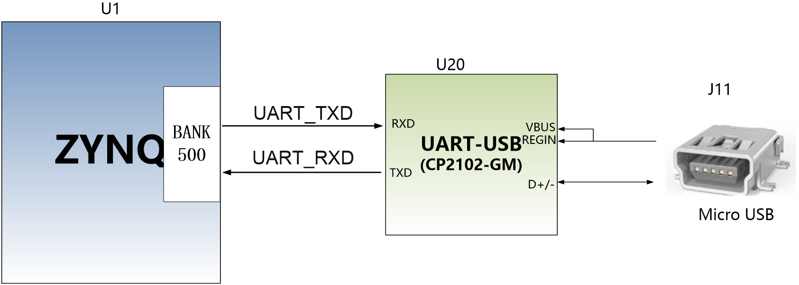
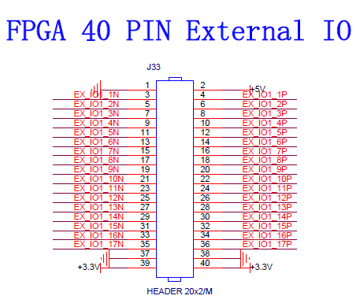

芯驿电子科技（上海）有限公司 基于XILINX ZYNQ7000开发平台的开发板（型号：AX7Z035B）2019款正式发布了正式发布了，为了让您对此开发平台可以快速了解，我们编写了此用户手册。
这款ZYNQ7000 FPGA开发平台采用核心板加扩展板的模式，方便用户对核心板的二次开发利用。核心板使用XILINX的Zynq7000 SOC芯片XC7Z035的解决方案，它采用ARM+FPGA SOC技术将双核ARM Cortex-A9 和FPGA 可编程逻辑集成在一颗芯片上。另外核心板上含有4片共2GB高速DDR3 SDRAM芯片，1片8GB的eMMC存储芯片和2片256Mb的QSPI FLASH芯片。
在底板设计上我们为用户扩展了丰富的外围接口，比如1个PCIex4 接口、4路光纤接口、2路千兆以太网接口、4路USB2.0 HOST接口、1路HDMI输出接口、1路HDMI输入接口、1路UART串口接口、1路SD卡接口、1个40针扩展接口等等。满足用户各种高速数据交换，数据存储，视频传输处理以及工业控制的要求，是一款”专业级“的ZYNQ开发平台。为高速数据传输和交换，数据处理的前期验证和后期应用提供了可能。相信这样的一款产品非常适合从事ZYNQ开发的学生、工程师等群体。

开发板简介#
在这里，对这款AX7Z035B ZYNQ开发平台进行简单的功能介绍。
开发板的整个结构，继承了我们一贯的核心板+扩展板的模式来设计的。核心板和扩展板之间使用高速板间连接器连接。
核心板主要由ZYNQ7035 + 4个DDR3 + eMMC + QSPI FLASH的最小系统构成。ZYNQ7035采用Xilinx公司的Zynq7000系列的芯片，型号为XC7Z035-2FFG676。ZYNQ7035芯片可分成处理器系统部分Processor System（PS）和可编程逻辑部分Programmable Logic（PL）。在ZYNQ7035芯片的PS端和PL端分别挂了2片DDR3，每片DDR3容量高达512M字节，使得ARM系统和FPGA系统能独立处理和存储的数据的功能。PS端的8GB eMMC FLASH存储芯片和512Mb的QSPI FLASH用来静态存储ZYNQ的操作系统、文件系统及用户数据。
底板为核心板扩展了丰富的外围接口，其中包含1个PCIex4接口、4路光纤接口、2路千兆以太网接口（PS和PL各一路）、4路USB2.0 HOST接口、1路HDMI输出接口、1路HDMI输出接口、1路UART串口接口、1路SD卡接口、1个40针扩展接口和一些按键LED。
下图为整个开发系统的结构示意图：
通过这个示意图，我们可以看到，我们这个开发平台所能含有的接口和功能。
ZYNQ7035核心板
由XC7Z035+2GB DDR3+8GB eMMC FLASH + 512Mb QSPI FLASH组成，另外有三个晶振提供时钟，一个单端33.3333MHz晶振提供给PS系统，一个差分200MHz晶振提供给PL逻辑DDR参考时钟，另外一个差分125MHz晶振提供给GTX收发器参考时钟。
PCIe x4接口
支持PCI Express 2.0标准，提供标准的PCIe x4高速数据传输接口，单通道通信速率可高达5GBaud。
4路SFP光纤接口
ZYNQ的GTX收发器的4路高速收发器连接到4个光模块的发送和接收，实现4路高速的光纤通信接口。每路的光纤数据通信接收和发送的速度高达10Gb/s。
千兆以太网接口
2路10/100M/1000M以太网RJ45接口，用于和电脑或其它网络设备进行以太网数据交换。网络接口芯片采用景略半导体的JL2121工业级GPHY芯片，1路以太网连接到ZYNQ芯片的PS端，1路以太网连接到ZYNQ芯片的PL端。
HDMI视频输出
1路HDMI视频输出接口，我们选用了ANALOG DEVICE公司的ADV7511 HDMI编码芯片，最高支持1080P@60Hz输出，支持3D输出。
HDMI视频输入
1路HDMI视频输入接口，我们选用了Silion Image公司的SIL9011/SIL9013 HDMI解码芯片，最高支持1080P@60Hz输入，支持不同格式的数据输入。
USB2.0 HOST接口
通过USB Hub芯片扩展4路USB HOST接口，用于连接外部的USB从设备，比如连接鼠标，键盘，U盘等等。USB接口采用扁型USB接口(USB Type A)。
USB Uart接口
1路Uart转USB接口，用于和电脑通信，方便用户调试。串口芯片采用Silicon Labs CP2102GM的USB-UAR芯片, USB接口采用MINI USB接口。
Micro SD卡座
1路Micro SD卡座，用于存储操作系统镜像和文件系统。
40针扩展口
1个40针2.54mm间距的扩展口，可以外接黑金的各种模块（双目摄像头，TFT LCD屏，高速AD模块等等）。扩展口包含5V电源1路，3.3V电源2路，地3路，IO口34路。
JTAG调试口
1个10针2.54mm标准的JTAG口，用于FPGA程序的下载和调试，用户可以通过XILINX下载器对ZYNQ系统进行调试和下载。
LED灯
10个发光二极管LED, 核心板上3个，底板上7个。核心板上1个电源指示灯；1个DONE配置指示灯；1个用户指示灯。底板上有1个电源指示灯，4个用户指示灯和2个串口指示灯。
按键
5个按键，1个复位按键， 4个PL用户按键。
AC7Z035B核心板#
简介#
AC7Z035B(核心板型号，下同)核心板，ZYNQ芯片是基于XILINX公司的ZYNQ7000系列的XC7Z035-2FFG676。ZYNQ芯片的PS系统集成了两个ARM Cortex™-A9处理器，AMBA®互连，内部存储器，外部存储器接口和外设。ZYNQ芯片的FPGA内部含有丰富的可编程逻辑单元，DSP和内部RAM。
这款核心板使用了4片Micron的512MB的DDR3芯片MT41J256M16HA-125,总的容量达2GB。其中PS和PL端各挂载两片，分别组成32bit的总线宽度。PS端的DDR3 SDRAM的最高运行速度可达533MHz(数据速率1066Mbps)，PL端的DDR3 SDRAM的最高运行速度可达800MHz(数据速率1600Mbps)。另外核心板上也集成了2片256MBit大小的QSPI FLASH和8GB大小的eMMC FLASH芯片，用于启动存储配置和系统文件。
为了和底板连接，这款核心板的4个板对板连接器扩展出了PS端的USB接口，千兆以太网接口，SD卡接口及其它剩余的MIO口；也扩展出了ZYNQ的8对高速收发器GTX接口；以及PL端的几乎所有IO口（144个），其中BANK12和BANK13的IO的电平可以通过更换核心板上的LDO芯片来修改，满足用户不用电平接口的要求。对于需要大量IO的用户，此核心板将是不错的选择。而且IO连接部分，ZYNQ芯片到接口之间走线做了等长和差分处理，并且核心板尺寸仅为80*60（mm），对于二次开发来说，非常适合。
AC7Z035B核心板正面图
AC7Z035B核心板背面图
ZYNQ芯片#
开发板使用的是Xilinx公司的Zynq7000系列的芯片，型号为XC7Z035-2FFG676。芯片的PS系统集成了两个ARM Cortex™-A9处理器，AMBA®互连，内部存储器，外部存储器接口和外设。这些外设主要包括USB总线接口，以太网接口，SD/SDIO接口，I2C总线接口，CAN总线接口，UART接口，GPIO等。PS可以独立运行并在上电或复位下启动。ZYNQ7000芯片的总体框图如图2-2-1所示

图2-2-1 ZYNQ7000芯片的总体框图
其中PS系统部分的主要参数如下：
基于ARM 双核CortexA9 的应用处理器，ARM-v7架构 高达800MHz
每个CPU 32KB 1级指令和数据缓存，512KB 2级缓存 2个CPU共享
片上boot ROM和256KB 片内RAM
外部存储接口，支持16/32 bit DDR2、DDR3接口
两个千兆网卡支持：发散-聚集DMA ，GMII，RGMII，SGMII接口
两个USB2.0 OTG接口，每个最多支持12节点
两个CAN2.0B总线接口
两个SD卡、SDIO、MMC兼容控制器
2个SPI，2个UARTs，2个I2C接口
54个多功能配置的IO，可以软件配置成普通IO或者外设控制接口
PS内和PS到PL的高带宽连接
其中PL逻辑部分的主要参数如下：
逻辑单元Logic Cells：275K；
查找表LUTs: 171,900
触发器(flip-flops):343,800
乘法器18x25MACCs：900;
Block RAM：17.6Mb；
8路高速GTX收发器，支持PCIE Gen2x8；
2个AD转换器,可以测量片上电压、温度感应和高达17外部差分输入通道，1MBPS
XC7Z035-2FFG676I芯片的速度等级为-2，工业级，封装为FGG676，引脚间距为1.0mm，ZYNQ7000系列的具体的芯片型号定义如下图2-2所示。

图2-2-2 ZYNQ型号命名规则定义
图2-2-3为开发板所用的XC7Z035芯片实物图。
图2-3 XC7Z035芯片实物
DDR3 DRAM#
AX7Z035B开发板上配有四片Micron(美光）的512MB的DDR3芯片,型号为MT41J256M16HA-125(兼容MT41K256M16HA-125)，其中PS和PL端各挂载两片。两片DDR3 SDRAM组成32bit的总线宽度。PS端的DDR3 SDRAM的最高运行速度可达533MHz(数据速率1066Mbps)，两片DDR3存储系统直接连接到了ZYNQ处理系统（PS）的BANK 502的存储器接口上。PL端的DDR3 SDRAM的最高运行速度可达800MHz(数据速率1600Mbps)，两片DDR3存储系统连接到了FPGA的BANK33, BANK34的接口上。DDR3 SDRAM的具体配置如下表2-3-1所示。
表2-3-1 DDR3 SDRAM配置
位号 |
芯片型号 |
容量 |
厂家 |
U4,U5,U7,U8 |
MT41J256M16HA-125 |
256M x 16bit |
Micron |
DDR3的硬件设计需要严格考虑信号完整性，我们在电路设计和PCB设计的时候已经充分考虑了匹配电阻/终端电阻,走线阻抗控制，走线等长控制， 保证DDR3的高速稳定的工作。
PS端的DDR3 DRAM的硬件连接方式如图2-3-1所示:
图2-3-1 PS端DDR3 DRAM原理图部分
PL端的DDR3 DRAM的硬件连接方式如图2-3-2所示:
图2-3-2 PL端DDR3 DRAM原理图部分
PS端DDR3 DRAM引脚分配：
信号名称 |
ZYNQ引脚名 |
ZYNQ引脚号 |
PS_DDR3_DQS0_P |
PS_DDR_DQS_P0_502 |
H24 |
PS_DDR3_DQS0_N |
PS_DDR_DQS_N0_502 |
G25 |
PS_DDR3_DQS1_P |
PS_DDR_DQS_P1_502 |
L24 |
PS_DDR3_DQS1_N |
PS_DDR_DQS_N1_502 |
L25 |
PS_DDR3_DQS2_P |
PS_DDR_DQS_P2_502 |
P25 |
PS_DDR3_DQS2_N |
PS_DDR_DQS_N2_502 |
R25 |
PS_DDR3_DQS3_P |
PS_DDR_DQS_P3_502 |
W24 |
PS_DDR3_DQS4_N |
PS_DDR_DQS_N3_502 |
W25 |
PS_DDR3_D0 |
PS_DDR_DQ0_502 |
J26 |
PS_DDR3_D1 |
PS_DDR_DQ1_502 |
F25 |
PS_DDR3_D2 |
PS_DDR_DQ2_502 |
J25 |
PS_DDR3_D3 |
PS_DDR_DQ3_502 |
G26 |
PS_DDR3_D4 |
PS_DDR_DQ4_502 |
H26 |
PS_DDR3_D5 |
PS_DDR_DQ5_502 |
H23 |
PS_DDR3_D6 |
PS_DDR_DQ6_502 |
J24 |
PS_DDR3_D7 |
PS_DDR_DQ7_502 |
J23 |
PS_DDR3_D8 |
PS_DDR_DQ8_502 |
K26 |
PS_DDR3_D9 |
PS_DDR_DQ9_502 |
L23 |
PS_DDR3_D10 |
PS_DDR_DQ10_502 |
M26 |
PS_DDR3_D11 |
PS_DDR_DQ11_502 |
K23 |
PS_DDR3_D12 |
PS_DDR_DQ12_502 |
M25 |
PS_DDR3_D13 |
PS_DDR_DQ13_502 |
N24 |
PS_DDR3_D14 |
PS_DDR_DQ14_502 |
M24 |
PS_DDR3_D15 |
PS_DDR_DQ15_502 |
N23 |
PS_DDR3_D16 |
PS_DDR_DQ16_502 |
R26 |
PS_DDR3_D17 |
PS_DDR_DQ17_502 |
P24 |
PS_DDR3_D18 |
PS_DDR_DQ18_502 |
N26 |
PS_DDR3_D19 |
PS_DDR_DQ19_502 |
P23 |
PS_DDR3_D20 |
PS_DDR_DQ20_502 |
T24 |
PS_DDR3_D21 |
PS_DDR_DQ21_502 |
T25 |
PS_DDR3_D22 |
PS_DDR_DQ22_502 |
T23 |
PS_DDR3_D23 |
PS_DDR_DQ23_502 |
R23 |
PS_DDR3_D24 |
PS_DDR_DQ24_502 |
V24 |
PS_DDR3_D25 |
PS_DDR_DQ25_502 |
U26 |
PS_DDR3_D26 |
PS_DDR_DQ26_502 |
U24 |
PS_DDR3_D27 |
PS_DDR_DQ27_502 |
U25 |
PS_DDR3_D28 |
PS_DDR_DQ28_502 |
W26 |
PS_DDR3_D29 |
PS_DDR_DQ29_502 |
Y25 |
PS_DDR3_D30 |
PS_DDR_DQ30_502 |
Y26 |
PS_DDR3_D31 |
PS_DDR_DQ31_502 |
W23 |
PS_DDR3_DM0 |
PS_DDR_DM0_502 |
G24 |
PS_DDR3_DM1 |
PS_DDR_DM1_502 |
K25 |
PS_DDR3_DM2 |
PS_DDR_DM2_502 |
P26 |
PS_DDR3_DM3 |
PS_DDR_DM3_502 |
V26 |
PS_DDR3_A0 |
PS_DDR_A0_502 |
K22 |
PS_DDR3_A1 |
PS_DDR_A1_502 |
K20 |
PS_DDR3_A2 |
PS_DDR_A2_502 |
N21 |
PS_DDR3_A3 |
PS_DDR_A3_502 |
L22 |
PS_DDR3_A4 |
PS_DDR_A4_502 |
M20 |
PS_DDR3_A5 |
PS_DDR_A5_502 |
N22 |
PS_DDR3_A6 |
PS_DDR_A6_502 |
L20 |
PS_DDR3_A7 |
PS_DDR_A7_502 |
J21 |
PS_DDR3_A8 |
PS_DDR_A8_502 |
T20 |
PS_DDR3_A9 |
PS_DDR_A9_502 |
U20 |
PS_DDR3_A10 |
PS_DDR_A10_502 |
M22 |
PS_DDR3_A11 |
PS_DDR_A11_502 |
H21 |
PS_DDR3_A12 |
PS_DDR_A12_502 |
P20 |
PS_DDR3_A13 |
PS_DDR_A13_502 |
J20 |
PS_DDR3_A14 |
PS_DDR_A14_502 |
R20 |
PS_DDR3_BA0 |
PS_DDR_BA0_502 |
U22 |
PS_DDR3_BA1 |
PS_DDR_BA1_502 |
T22 |
PS_DDR3_BA2 |
PS_DDR_BA2_502 |
R22 |
PS_DDR3_S0 |
PS_DDR_CS_B_502 |
Y21 |
PS_DDR3_RAS |
PS_DDR_RAS_B_502 |
V23 |
PS_DDR3_CAS |
PS_DDR_CAS_B_502 |
Y23 |
PS_DDR3_WE |
PS_DDR_WE_B_502 |
V22 |
PS_DDR3_ODT |
PS_DDR_ODT_502 |
Y22 |
PS_DDR3_RESET |
PS_DDR_DRST_B_502 |
H22 |
PS_DDR3_CLK0_P |
PS_DDR_CKP_502 |
R21 |
PS_DDR3_CLK0_N |
PS_DDR_CKN_502 |
P21 |
PS_DDR3_CKE |
PS_DDR_CKE_502 |
U21 |
PL端DDR3 DRAM引脚分配：
信号名称 |
ZYNQ引脚名 |
ZYNQ引脚号 |
PL_DDR3_DQS0_P |
IO_L3P_T0_DQS_33 |
G2 |
PL_DDR3_DQS0_N |
IO_L3N_T0_DQS_33 |
F2 |
PL_DDR3_DQS1_P |
IO_L9P_T1_DQS_33 |
K2 |
PL_DDR3_DQS1_N |
IO_L9N_T1_DQS_33 |
K1 |
PL_DDR3_DQS2_P |
IO_L15P_T2_DQS_33 |
N3 |
PL_DDR3_DQS2_N |
IO_L15N_T2_DQS_33 |
N2 |
PL_DDR3_DQS3_P |
IO_L21P_T3_DQS_33 |
M8 |
PL_DDR3_DQS4_N |
IO_L21N_T3_DQS_33 |
L8 |
PL_DDR3_D0 |
IO_L5N_T0_33 |
E1 |
PL_DDR3_D1 |
IO_L1N_T0_33 |
F4 |
PL_DDR3_D2 |
IO_L4P_T0_33 |
D1 |
PL_DDR3_D3 |
IO_L1P_T0_33 |
G4 |
PL_DDR3_D4 |
IO_L2N_T0_33 |
D3 |
PL_DDR3_D5 |
IO_L5P_T0_33 |
E2 |
PL_DDR3_D6 |
IO_L2P_T0_33 |
D4 |
PL_DDR3_D7 |
IO_L4N_T0_33 |
C1 |
PL_DDR3_D8 |
IO_L7N_T1_33 |
H1 |
PL_DDR3_D9 |
IO_L10N_T1_33 |
G1 |
PL_DDR3_D10 |
IO_L7P_T1_33 |
J1 |
PL_DDR3_D11 |
IO_L8N_T1_33 |
H3 |
PL_DDR3_D12 |
IO_L11N_T1_SRCC_33 |
K3 |
PL_DDR3_D13 |
IO_L8P_T1_33 |
H4 |
PL_DDR3_D14 |
IO_L11P_T1_SRCC_33 |
L3 |
PL_DDR3_D15 |
IO_L10P_T1_33 |
H2 |
PL_DDR3_D16 |
IO_L18P_T2_33 |
N1 |
PL_DDR3_D17 |
IO_L14P_T2_SRCC_33 |
L5 |
PL_DDR3_D18 |
IO_L14N_T2_SRCC_33 |
L4 |
PL_DDR3_D19 |
IO_L13P_T2_MRCC_33 |
M6 |
PL_DDR3_D20 |
IO_L16P_T2_33 |
M2 |
PL_DDR3_D21 |
IO_L17P_T2_33 |
N4 |
PL_DDR3_D22 |
IO_L16N_T2_33 |
L2 |
PL_DDR3_D23 |
IO_L17N_T2_33 |
M4 |
PL_DDR3_D24 |
IO_L23P_T3_33 |
N7 |
PL_DDR3_D25 |
IO_L22N_T3_33 |
J6 |
PL_DDR3_D26 |
IO_L19P_T3_33 |
M7 |
PL_DDR3_D27 |
IO_L20N_T3_33 |
J5 |
PL_DDR3_D28 |
IO_L24P_T3_33 |
K8 |
PL_DDR3_D29 |
IO_L20P_T3_33 |
K5 |
PL_DDR3_D30 |
IO_L24N_T3_33 |
K7 |
PL_DDR3_D31 |
IO_L22P_T3_33 |
K6 |
PL_DDR3_DM0 |
IO_L6P_T0_33 |
F3 |
PL_DDR3_DM1 |
IO_L12P_T1_MRCC_33 |
J4 |
PL_DDR3_DM2 |
IO_L13N_T2_MRCC_33 |
M5 |
PL_DDR3_DM3 |
IO_L23N_T3_33 |
N6 |
PL_DDR3_A0 |
IO_L17N_T2_34 |
A8 |
PL_DDR3_A1 |
IO_L23P_T3_34 |
C2 |
PL_DDR3_A2 |
IO_L14P_T2_SRCC_34 |
D6 |
PL_DDR3_A3 |
IO_L15N_T2_DQS_34 |
B9 |
PL_DDR3_A4 |
IO_L10N_T1_34 |
D5 |
PL_DDR3_A5 |
IO_L17P_T2_34 |
A9 |
PL_DDR3_A6 |
IO_L11N_T1_SRCC_34 |
E7 |
PL_DDR3_A7 |
IO_L15P_T2_DQS_34 |
C9 |
PL_DDR3_A8 |
IO_L12N_T1_MRCC_34 |
F7 |
PL_DDR3_A9 |
IO_L18N_T2_34 |
A7 |
PL_DDR3_A10 |
IO_L24N_T3_34 |
A2 |
PL_DDR3_A11 |
IO_L11P_T1_SRCC_34 |
F8 |
PL_DDR3_A12 |
IO_L23N_T3_34 |
B1 |
PL_DDR3_A13 |
IO_L16P_T2_34 |
B10 |
PL_DDR3_A14 |
IO_L12P_T1_MRCC_34 |
G7 |
PL_DDR3_BA0 |
IO_L18P_T2_34 |
B7 |
PL_DDR3_BA1 |
IO_L19N_T3_VREF_34 |
C3 |
PL_DDR3_BA2 |
IO_L22N_T3_34 |
A3 |
PL_DDR3_S0 |
IO_L14N_T2_SRCC_34 |
C6 |
PL_DDR3_RAS |
IO_L19P_T3_34 |
C4 |
PL_DDR3_CAS |
IO_L20N_T3_34 |
B4 |
PL_DDR3_WE |
IO_L20P_T3_34 |
B5 |
PL_DDR3_ODT |
IO_L22P_T3_34 |
A4 |
PL_DDR3_RESET |
IO_L16N_T2_34 |
A10 |
PL_DDR3_CLK0_P |
IO_L21P_T3_DQS_34 |
B6 |
PL_DDR3_CLK0_N |
IO_L21N_T3_DQS_34 |
A5 |
PL_DDR3_CKE |
IO_L24P_T3_34 |
B2 |
QSPI Flash#
开发板配有2片256MBit大小的Quad-SPI FLASH芯片组成8位带宽数据总线，FLASH型号为W25Q256FVEI，它使用3.3V CMOS电压标准。由于QSPI FLASH的非易失特性，在使用中， 它可以作为系统的启动设备来存储系统的启动镜像。这些镜像主要包括FPGA的bit文件、ARM的应用程序代码以及其它的用户数据文件。QSPI FLASH的具体型号和相关参数见表2-4-1。
位号 |
芯片类型 |
容量 |
厂家 |
U13,U14 |
W25Q256FVEI |
256M bit |
Winbond |
表2-4-1 QSPI Flash的型号和参数
QSPI FLASH连接到ZYNQ芯片的PS部分BANK500的GPIO口上，在系统设计中需要配置这些PS端的GPIO口功能为QSPI FLASH接口。为图4-1为QSPI Flash在原理图中的部分。

图2-4-1 QSPI Flash连接示意图
配置芯片引脚分配：
信号名称 |
ZYNQ引脚名 |
ZYNQ引脚号 |
QSPI0_SCK |
PS_MIO6_500 |
F23 |
QSPI0_CS |
PS_MIO1_500 |
D26 |
QSPI0_D0 |
PS_MIO2_500 |
E25 |
QSPI0_D1 |
PS_MIO3_500 |
D25 |
QSPI0_D2 |
PS_MIO4_500 |
F24 |
QSPI0_D3 |
PS_MIO5_500 |
C26 |
QSPI1_SCK |
PS_MIO9_500 |
D24 |
QSPI1_CS |
PS_MIO0_500 |
E26 |
QSPI1_D0 |
PS_MIO10_500 |
A25 |
QSPI1_D1 |
PS_MIO11_500 |
B26 |
QSPI1_D2 |
PS_MIO12_500 |
A23 |
QSPI1_D3 |
PS_MIO13_500 |
B25 |
eMMC Flash#
开发板配有一片大容量的8GB大小的eMMC FLASH芯片，型号为THGBMFG6C1LBAIL，它支持JEDEC e-MMC V5.0标准的HS-MMC接口，电平支持1.8V或者3.3V。eMMC FLASH和ZYNQ连接的数据宽度为4bit。由于eMMC FLASH的大容量和非易失特性，在ZYNQ系统使用中，它可以作为系统大容量的存储设备，比如存储ARM的应用程序、系统文件以及其它的用户数据文件。eMMC FLASH的具体型号和相关参数见表2-5-1。
位号 |
芯片类型 |
容量 |
厂家 |
U11 |
THGBMFG6C1LBAIL |
8G Byte |
TOSHIBA |
表2-5-1 eMMC Flash的型号和参数
eMMC FLASH连接到ZYNQ芯片的PS部分BANK501的GPIO口上，在系统设计中需要配置这些PS端的GPIO口功能为SD接口。为图2-5-1为eMMC Flash在原理图中的部分。
图2-5-1 eMMC Flash连接示意图
配置芯片引脚分配：
信号名称 |
ZYNQ引脚名 |
ZYNQ引脚号 |
MMC_CCLK |
PS_MIO48_501 |
B21 |
MMC_CMD |
PS_MIO47_501 |
B19 |
MMC_D0 |
PS_MIO46_501 |
E17 |
MMC_D1 |
PS_MIO49_501 |
A18 |
MMC_D2 |
PS_MIO50_501 |
B22 |
MMC_D3 |
PS_MIO51_501 |
B20 |
时钟配置#
核心板上分别为PS系统, PL逻辑部分和GTX收发器提供了参考时钟，使PS系统和PL逻辑可以单独工作。时钟电路设计的示意图如下图2-6-1所示：
图 2-6-1 核心板时钟源
PS系统时钟源
ZYNQ芯片通过开发板上的X4晶振为PS部分提供33.333MHz的时钟输入。时钟的输入连接到ZYNQ芯片的BANK500的PS_CLK_500的管脚上。其原理图如图2-6-2所示：

图2-6-2 PS部分的有源晶振
时钟引脚分配：
信号名称 |
ZYNQ引脚 |
PS_CLK |
B24 |
PL系统时钟源
板上提供了一个差分200MHz的PL系统时钟源，用于DDR3控制器的参考时钟。晶振输出连接到FPGA BANK34的全局时钟(MRCC)，这个全局时钟可以用来驱动FPGA内的DDR3控制器和用户逻辑电路。该时钟源的原理图如图2-6-4所示

图 2-6-4 PL系统时钟源
PL时钟引脚分配：
信号名称 |
ZYNQ引脚 |
SYS_CLK_P |
C8 |
SYS_CLK_N |
C7 |
GTX参考时钟
核心板上为GTX收发器提供了125Mhz的参考时钟。参考时钟连接到BANK111的参考时钟输入REFCLK1P/REFCLK1N。该时钟源的原理图如图2-6-6所示

图 2-6-6 GTX时钟源
图6-7为可GTX时钟源的实物图

图2-6-7 可编程时钟源实物图
GTX时钟源ZYNQ引脚分配：
信号名称 |
ZYNQ引脚 |
BANK111_CLK1_P |
AA6 |
BANK111_CLK1_N |
AA5 |
LED灯#
AC7Z035B核心板上有3个红色LED灯，其中1个是电源指示灯(PWR)，1个是配置LED灯(DONE)，1个是用户LED灯。当核心板供电后，电源指示灯会亮起；当FPGA 配置程序后，配置LED灯会亮起。用户LED灯一个连接到PL的IO上, 用户可以通过程序来控制亮和灭，当连接用户LED灯的IO电压为高时，用户LED灯熄灭，当连接IO电压为低时，用户LED会被点亮。LED灯硬件连接的示意图如图2-7-1所示：
图2-7-1 核心板LED灯硬件连接示意图
用户LED灯的引脚分配
LED灯 |
ZYNQ引脚名 |
ZY NQ管脚号 |
备注 |
D14 |
B13_IO25 |
V19 |
用户LED灯 |
复位电路#
AC7Z035B核心板上有一个复位电路，复位输入信号连接到底板的复位按键，复位输出连接到ZYNQ芯片PS复位管脚上，用户可以使用这个底板按键来复位ZYNQ系统。复位连接的示意图如图2-8-1所示：
图2-8-1 复位连接示意图
复位按键的ZYNQ管脚分配
信号名称 |
ZY NQ引脚名 |
ZY NQ引脚号 |
备注 |
PS_POR_B |
PS_POR_B_500 |
C23 |
ZYNQ系统复位信号 |
电源#
AC7Z035B核心板供电电压为DC5V，通过连接底板供电。板上的电源设计示意图如下图2-9-1所示:
图2-9-1原理图中电源接口部分
+5V通过DCDC电源芯片MYMGK1R820FRSR产生+1.0V的ZYNQ核心电源，+1.0V电源输出电流高达20A，远远满足ZYNQ的核心电压的电流需求。+5V电源再通过DCDC芯片ETA1471来产生MGTAVTT, +1.5V，+3.3V，+1.5V四路电源。通过DCDC芯片ETA8156产生MGTAVTT的电源，+3.3V通过一个LDO芯片SPX3819-1-8产生GTX的辅助电源+1.8V。PS部分和PL部分的DDR3的VTT和VREF电压由TPS51200来产生。另外通过2路SPX3819M5-3-3产生BANK12和BANK13的IO电源，用户可以通过更换LDO芯片，使得这两个BANK的IO输入输出为其它的电压标准。
各个电源分配的功能如下表所示：
电源 |
功能 |
+1.0V |
ZYNQ PS和PL部分的内核电压 |
+1.8V |
ZYNQ PS和PL部分辅助电压，BANK501，BANK35，eMMC |
+3.3V |
ZYNQ Bank0,Bank500，QSIP FLASH, Clock晶振 |
+1.5V |
DDR3, ZYNQ Bank502, Bank33,Bank34 |
VCCIO12 |
ZYNQ Bank12 |
VCCIO13 |
ZYNQ Bank13 |
VREF, VTT（+0.75V） |
PS DDR3，PL DDR3 |
MGTAVCC(+1.0V) |
ZYNQ Bank111, Bank112 |
MGTAVTT(+1.2V) |
ZYNQ Bank111, Bank112 |
MGTVCCAUX（+1.8V） |
ZYNQ Bank111, Bank112 |
因为ZYNQ FPGA的电源有上电顺序的要求，在电路设计中，我们已经按照 芯片的电源要求设计，上电依次为+1.0V->+1.8V->（+1.5 V、+3.3V、VCCIO12，VCCIO13）的电路设计，保证芯片的正常工作。
结构图#
正面图（Top View）
连接器管脚定义#
核心板一共扩展出4个高速扩展口，使用4个120Pin的板间连接器（J29~J32）和底板连接，连接器使用松下的AXK5A2137YG，对应底板的连接器型号为AXK6A2337YG。其中J29连接BANK12,BANK13的IO，J30连接GTX的收发器信号, J31连接JTAG和BANK35的IO（1.8V电平标准），J 32连接PS的MIO，BANK13的IO和+5V电源。
J29连接器的引脚分配
J 29管脚 |
信 号名称 |
ZY NQ引 脚号 |
J 29管脚 |
信号 名称 |
ZYNQ 引脚号 |
1 |
B13_L8_P |
AE23 |
2 |
B13_L9_N |
AB22 |
3 |
B13_L8_N |
AF23 |
4 |
B13_L9_P |
AB21 |
5 |
GND |
6 |
GND |
||
7 |
B13_L10_N |
AA23 |
8 |
B13_L13_N |
AD21 |
9 |
B13_L10_P |
AA22 |
10 |
B13_L13_P |
AD20 |
11 |
GND |
12 |
GND |
||
13 |
B13_L15_N |
AF20 |
14 |
B13_L14_N |
AC22 |
15 |
B13_L15_P |
AF19 |
16 |
B13_L14_P |
AC21 |
17 |
GND |
18 |
GND |
||
19 |
B13_L23_N |
W19 |
20 |
B13_L7_P |
AE22 |
21 |
B13_L23_P |
W18 |
22 |
B13_L7_N |
AF22 |
23 |
GND |
24 |
GND |
||
25 |
B13_L22_P |
AA19 |
26 |
B13_L20_P |
AA20 |
27 |
B13_L22_N |
AB19 |
28 |
B13_L20_N |
AB20 |
29 |
GND |
30 |
GND |
||
31 |
B13_L17_N |
AD19 |
32 |
B13_L18_N |
AF18 |
33 |
B13_L17_P |
AD18 |
34 |
B13_L18_P |
AE18 |
35 |
GND |
36 |
GND |
||
37 |
B13_L19_N |
Y20 |
38 |
B13_L16_N |
AE21 |
39 |
B13_L19_P |
W20 |
40 |
B13_L16_P |
AE20 |
41 |
GND |
42 |
GND |
||
43 |
B13_L24_N |
AA18 |
44 |
B13_L21_N |
AC19 |
45 |
B13_L24_P |
Y18 |
46 |
B13_L21_P |
AC18 |
47 |
GND |
48 |
GND |
||
49 |
B12_L23_P |
Y16 |
50 |
B12_L18_N |
AF17 |
51 |
B12_L23_N |
Y15 |
52 |
B12_L18_P |
AE17 |
53 |
GND |
54 |
GND |
||
55 |
B12_L15_P |
AD16 |
56 |
B12_L16_P |
AF15 |
57 |
B12_L15_N |
AD15 |
58 |
B12_L16_N |
AF14 |
59 |
GND |
60 |
GND |
||
61 |
B12_L14_P |
AB15 |
62 |
B12_L13_N |
AD14 |
63 |
B12_L14_N |
AB14 |
64 |
B12_L13_P |
AC14 |
65 |
GND |
66 |
GND |
||
67 |
B12_L10_N |
AF13 |
68 |
B12_L19_P |
Y17 |
69 |
B12_L10_P |
AE13 |
70 |
B12_L19_N |
AA17 |
71 |
GND |
72 |
GND |
||
73 |
B12_L4_P |
AB11 |
74 |
B12_L20_P |
AB17 |
75 |
B12_L4_N |
AB10 |
76 |
B12_L20_N |
AB16 |
77 |
GND |
78 |
GND |
||
79 |
B12_L7_P |
AE10 |
80 |
B12_L8_N |
AF12 |
81 |
B12_L7_N |
AD10 |
82 |
B12_L8_P |
AE12 |
83 |
GND |
84 |
GND |
||
85 |
B12_L24_P |
W16 |
86 |
B12_L21_P |
AC17 |
87 |
B12_L24_N |
W15 |
88 |
B12_L21_N |
AC16 |
89 |
GND |
90 |
GND |
||
91 |
B12_L3_N |
AA10 |
92 |
B12_L17_P |
AE16 |
93 |
B12_L3_P |
Y10 |
94 |
B12_L17_N |
AE15 |
95 |
GND |
96 |
GND |
||
97 |
B12_L11_P |
AC12 |
98 |
B12_L22_P |
AA15 |
99 |
B12_L11_N |
AD11 |
100 |
B12_L22_N |
AA14 |
101 |
GND |
102 |
GND |
||
103 |
B12_L12_N |
AD13 |
104 |
B12_L5_P |
W13 |
105 |
B12_L12_P |
AC13 |
106 |
B12_L5_N |
Y13 |
107 |
GND |
108 |
GND |
||
109 |
B12_L6_P |
AA13 |
110 |
B12_L9_P |
AE11 |
111 |
B12_L6_N |
AA12 |
112 |
B12_L9_N |
AF10 |
113 |
GND |
114 |
GND |
||
115 |
B12_L1_P |
Y12 |
116 |
B12_L2_P |
AB12 |
117 |
B12_L1_N |
Y11 |
118 |
B12_L2_N |
AC11 |
119 |
GND |
120 |
GND |
J30连接器的引脚分配
J30 管脚 |
信号名称 |
ZYN Q引脚 号 |
J3 0管脚 |
信号名称 |
ZY NQ引 脚号 |
1 |
2 |
||||
3 |
4 |
||||
5 |
GND |
6 |
GND |
||
7 |
8 |
||||
9 |
10 |
||||
11 |
GND |
12 |
GND |
||
13 |
14 |
||||
15 |
16 |
||||
17 |
GND |
18 |
GND |
||
19 |
20 |
||||
21 |
22 |
||||
23 |
GND |
24 |
GND |
||
25 |
26 |
||||
27 |
28 |
||||
29 |
GND |
30 |
GND |
||
31 |
BANK112_TX0_N |
AA1 |
32 |
BANK112_RX0_N |
AB3 |
33 |
BANK112_TX0_P |
AA2 |
34 |
BANK112_RX0_P |
AB4 |
35 |
GND |
R13 |
36 |
GND |
R13 |
37 |
BANK112_TX1_N |
W1 |
38 |
BANK112_RX1_N |
Y3 |
39 |
BANK112_TX1_P |
W2 |
40 |
BANK112_RX1_P |
Y4 |
41 |
GND |
R13 |
42 |
GND |
R13 |
43 |
BANK112_TX2_N |
U1 |
44 |
BANK112_RX2_N |
V3 |
45 |
BANK112_TX2_P |
U2 |
46 |
BANK112_RX2_P |
V4 |
47 |
GND |
R13 |
48 |
GND |
R13 |
49 |
BANK112_TX3_N |
R1 |
50 |
BANK112_RX3_N |
T3 |
51 |
BANK112_TX3_P |
R2 |
52 |
BANK112_RX3_P |
T4 |
53 |
GND |
R13 |
54 |
GND |
R13 |
55 |
B ANK112_CLK0_N |
R5 |
56 |
B ANK112_CLK1_N |
U5 |
57 |
B ANK112_CLK0_P |
R6 |
58 |
B ANK112_CLK1_P |
U6 |
59 |
GND |
60 |
GND |
R13 |
|
61 |
62 |
BANK111_RX3_N |
AD3 |
||
63 |
64 |
BANK111_RX3_P |
AD4 |
||
65 |
GND |
66 |
GND |
R13 |
|
67 |
68 |
BANK111_TX3_N |
AC1 |
||
69 |
70 |
BANK111_TX3_P |
AC2 |
||
71 |
GND |
72 |
GND |
R13 |
|
73 |
74 |
BANK111_RX2_N |
AC5 |
||
75 |
76 |
BANK111_RX2_P |
AC6 |
||
77 |
GND |
78 |
GND |
R13 |
|
79 |
80 |
BANK111_TX2_N |
AE1 |
||
81 |
82 |
BANK111_TX2_P |
AE2 |
||
83 |
GND |
84 |
GND |
R13 |
|
85 |
86 |
BANK111_RX1_N |
AE5 |
||
87 |
88 |
BANK111_RX1_P |
AE6 |
||
89 |
GND |
90 |
GND |
R13 |
|
91 |
92 |
BANK111_TX1_N |
AF3 |
||
93 |
94 |
BANK111_TX1_P |
AF4 |
||
95 |
GND |
96 |
GND |
R13 |
|
97 |
98 |
BANK111_RX0_N |
AD7 |
||
99 |
100 |
BANK111_RX0_P |
AD8 |
||
101 |
GND |
102 |
GND |
R13 |
|
103 |
104 |
BANK111_TX0_N |
AF7 |
||
105 |
106 |
BANK111_TX0_P |
AF8 |
||
107 |
GND |
108 |
GND |
R13 |
|
109 |
110 |
B ANK111_CLK0_N |
W5 |
||
111 |
112 |
B ANK111_CLK0_P |
W6 |
||
113 |
GND |
114 |
GND |
||
115 |
116 |
||||
117 |
118 |
||||
119 |
GND |
120 |
GND |
J31连接器的引脚分配
J 31管脚 |
信 号名称 |
ZY NQ引 脚号 |
J 31管脚 |
信号 名称 |
ZYNQ 引脚号 |
1 |
FPGA_TCK |
W12 |
2 |
FPGA_TDI |
V11 |
3 |
FPGA_TMS |
W11 |
4 |
FPGA_TDO |
W10 |
5 |
GND |
6 |
GND |
||
7 |
B35_L3_P |
G10 |
8 |
B35_L2_P |
E10 |
9 |
B35_L3_N |
F10 |
10 |
B35_L2_N |
D10 |
11 |
GND |
12 |
GND |
||
13 |
B35_L7_N |
H12 |
14 |
B35_L6_P |
F13 |
15 |
B35_L7_P |
H13 |
16 |
B35_L6_N |
E13 |
17 |
GND |
18 |
GND |
||
19 |
B35_L4_P |
E11 |
20 |
B35_L23_P |
C11 |
21 |
B35_L4_N |
D11 |
22 |
B35_L23_N |
B11 |
23 |
GND |
24 |
GND |
||
25 |
B35_L5_N |
G11 |
26 |
B35_L22_P |
C12 |
27 |
B35_L5_P |
G12 |
28 |
B35_L22_N |
B12 |
29 |
GND |
30 |
GND |
||
31 |
B35_L8_P |
K13 |
32 |
B35_L24_N |
A12 |
33 |
B35_L8_N |
J13 |
34 |
B35_L24_P |
A13 |
35 |
GND |
36 |
GND |
||
37 |
B35_L12_P |
J14 |
38 |
B35_L11_N |
F14 |
39 |
B35_L12_N |
H14 |
40 |
B35_L11_P |
G14 |
41 |
GND |
42 |
GND |
||
43 |
B35_L9_P |
K15 |
44 |
B35_L19_N |
C13 |
45 |
B35_L9_N |
J15 |
46 |
B35_L19_P |
D13 |
47 |
GND |
48 |
GND |
||
49 |
B35_L1_N |
E12 |
50 |
B35_L21_N |
A14 |
51 |
B35_L1_P |
F12 |
52 |
B35_L21_P |
A15 |
53 |
GND |
54 |
GND |
||
55 |
B35_L17_N |
B15 |
56 |
B35_L14_P |
F15 |
57 |
B35_L17_P |
B16 |
58 |
B35_L14_N |
E15 |
59 |
GND |
60 |
GND |
||
61 |
B35_L20_N |
B14 |
62 |
B35_L18_P |
B17 |
63 |
B35_L20_P |
C14 |
64 |
B35_L18_N |
A17 |
65 |
GND |
66 |
GND |
||
67 |
B35_L10_N |
G15 |
68 |
B35_L15_N |
C16 |
69 |
B35_L10_P |
G16 |
70 |
B35_L15_P |
C17 |
71 |
GND |
72 |
GND |
||
73 |
B35_L13_N |
D14 |
74 |
||
75 |
B35_L13_P |
D15 |
76 |
||
77 |
GND |
78 |
GND |
||
79 |
B35_L16_N |
D16 |
80 |
||
81 |
B35_L16_P |
E16 |
82 |
||
83 |
GND |
84 |
GND |
||
85 |
86 |
||||
87 |
88 |
||||
89 |
GND |
90 |
GND |
||
91 |
92 |
||||
93 |
94 |
||||
95 |
GND |
96 |
GND |
||
97 |
98 |
||||
99 |
100 |
||||
101 |
GND |
102 |
GND |
||
103 |
104 |
||||
105 |
106 |
||||
107 |
GND |
108 |
GND |
||
109 |
110 |
||||
111 |
112 |
||||
113 |
GND |
114 |
GND |
||
115 |
PS_POR_B |
116 |
|||
117 |
SYS_RESET |
118 |
|||
119 |
GND |
120 |
GND |
J32连接器的引脚分配
J 32管脚 |
信 号名称 |
ZY NQ引 脚号 |
J 32管脚 |
信号 名称 |
ZYNQ 引脚号 |
1 |
PS_MIO5 |
C26 |
2 |
PS_MIO17 |
G17 |
3 |
PS_MIO4 |
F24 |
4 |
PS_MIO18 |
G20 |
5 |
GND |
6 |
GND |
||
7 |
PS_MIO14 |
D23 |
8 |
PS_MIO19 |
G19 |
9 |
PS_MIO15 |
C24 |
10 |
PS_MIO20 |
H19 |
11 |
GND |
12 |
GND |
||
13 |
PS_MIO52 |
A20 |
14 |
PS_MIO16 |
G21 |
15 |
PS_MIO53 |
A19 |
16 |
PS_MIO21 |
F22 |
17 |
GND |
18 |
GND |
||
19 |
PS_MIO7 |
E23 |
20 |
PS_MIO26 |
H17 |
21 |
22 |
PS_MIO25 |
F19 |
||
23 |
GND |
24 |
GND |
||
25 |
PS_MIO40 |
C22 |
26 |
PS_MIO24 |
J19 |
27 |
PS_MIO41 |
C19 |
28 |
PS_MIO23 |
F20 |
29 |
GND |
30 |
GND |
||
31 |
PS_MIO42 |
F17 |
32 |
PS_MIO27 |
F18 |
33 |
PS_MIO43 |
D18 |
34 |
PS_MIO22 |
G22 |
35 |
GND |
36 |
GND |
||
37 |
PS_MIO44 |
E18 |
38 |
PS_MIO30 |
K19 |
39 |
PS_MIO45 |
C18 |
40 |
PS_MIO29 |
E20 |
41 |
GND |
42 |
GND |
||
43 |
44 |
PS_MIO36 |
K16 |
||
45 |
46 |
PS_MIO31 |
E21 |
||
47 |
GND |
48 |
GND |
||
49 |
50 |
PS_MIO32 |
K17 |
||
51 |
52 |
PS_MIO33 |
E22 |
||
53 |
GND |
54 |
GND |
||
55 |
56 |
PS_MIO34 |
J16 |
||
57 |
58 |
PS_MIO35 |
D19 |
||
59 |
GND |
60 |
GND |
||
61 |
62 |
PS_MIO28 |
J18 |
||
63 |
64 |
PS_MIO37 |
D20 |
||
65 |
GND |
66 |
GND |
||
67 |
68 |
PS_MIO38 |
D21 |
||
69 |
70 |
PS_MIO39 |
C21 |
||
71 |
GND |
72 |
GND |
||
73 |
74 |
||||
75 |
76 |
||||
77 |
GND |
78 |
GND |
||
79 |
80 |
||||
81 |
82 |
||||
83 |
GND |
84 |
GND |
||
85 |
B13_L1_P |
AA25 |
86 |
B13_L11_P |
AD23 |
87 |
B13_L1_N |
AB25 |
88 |
B13_L11_N |
AD24 |
89 |
GND |
90 |
GND |
||
91 |
B13_L6_P |
AA24 |
92 |
B13_L4_P |
AD25 |
93 |
B13_L6_N |
AB24 |
94 |
B13_L4_N |
AD26 |
95 |
GND |
96 |
GND |
||
97 |
B13_L2_N |
AC26 |
98 |
B13_L5_P |
AF24 |
99 |
B13_L2_P |
AB26 |
100 |
B13_L5_N |
AF25 |
101 |
GND |
102 |
GND |
||
103 |
B13_L12_P |
AC23 |
104 |
B13_L3_P |
AE25 |
105 |
B13_L12_N |
AC24 |
106 |
B13_L3_N |
AE26 |
107 |
+5V |
108 |
+5V |
||
109 |
+5V |
110 |
+5V |
||
111 |
+5V |
112 |
+5V |
||
113 |
+5V |
114 |
+5V |
||
115 |
+5V |
116 |
+5V |
||
117 |
+5V |
118 |
+5V |
||
119 |
+5V |
120 |
+5V |
扩展板#
简介#
通过前面的功能简介，我们可以了解到扩展板部分的功能
1路PCIEx4接口
4路光纤接口
2路10/100M/1000M以太网RJ-45接口
1路HDMI视频输出接口
1路HDMI视频输入接口
4路USB HOST接口
1路USB Uart通信接口
1路SD卡接口
1路40针扩展口
JTAG调试接口
4个独立按键
4个用户LED灯
USB转串口#
AX7Z035B扩展板上配备了一个Uart转USB接口，用于系统调试。转换芯片采用Silicon Labs CP2102GM的USB-UAR芯片, USB接口采用MINI USB接口，可以用一根USB线将它连接到上PC的USB口进行核心板的单独供电和串口数据通信 。
USB Uart电路设计的示意图如下图所示:
3-2-1 USB转串口示意图
下图为USB转串口的实物图

3-2-2 USB转串口实物图
USB转串口的ZYNQ引脚分配：
信号名称 |
ZY NQ引脚名 |
ZY NQ引脚号 |
备注 |
UART_RXD |
PS_MIO14_500 |
D23 |
Uart数据输入 |
UART_TXD |
PS_MIO15_500 |
C24 |
Uart数据输出 |
千兆以太网接口#
AX7Z035B扩展板上有2路千兆以太网接口，其中1路以太网接口是连接的PS系统端，另外1路以太网接口是连接到PL的逻辑IO口上。连接到PL端的千兆以太网接口需要通过程序调用IP挂载到ZYNQ的AXI总线系统上。
以太网芯片采用景略半导体的工业级以太网GPHY芯片（JL2121-N040I）为用户提供网络通信服务。PS端的以太网PHY芯片是连接到ZYNQ的PS端BANK501的GPIO接口上。PL端的的以太网PHY芯片是连接到BANK35 的IO上。JL2121芯片支持10/100/1000 Mbps网络传输速率，通过RGMII接口跟Zynq7000系统的MAC层进行数据通信。JL2121D支持ＭDI/MDX自适应，各种速度自适应，Master/Slave自适应，支持MDIO总线进行PHY的寄存器管理。
JL2121上电会检测一些特定的IO的电平状态，从而确定自己的工作模式。表8-1 描述了GPHY芯片上电之后的默认设定信息。
配置Pin脚 |
说明 |
配置值 |
RXD3_ADR0 RXC_ADR1 RXCTL_ADR2 |
MDIO/MDC 模式的PHY地址 |
PHY Address 为 001 |
RXD1_TXDLY |
TX时钟2ns延时 |
延时 |
RXD0_RXDLY |
RX时钟2ns延时 |
延时 |
表3-3-1PHY芯片默认配置值
当网络连接到千兆以太网时，ZYNQ和PHY芯片JL2121的数据传输时通过RGMII总线通信，传输时钟为125Mhz，数据在时钟的上升沿和下降样采样。
当网络连接到百兆以太网时，ZYNQ和PHY芯片JL2121的数据传输时通过RMII总线通信，传输时钟为25Mhz。数据在时钟的上升沿和下降样采样。
图3-3-1为ZYNQ PS端1路以太网PHY芯片连接示意图:
 图3-3-1 ZYNQ
PS系统与GPHY连接示意图
图3-3-1 ZYNQ
PS系统与GPHY连接示意图
图3-3-2为ZYNQ PL端1路以太网PHY芯片连接示意图:

图3-3-2 ZYNQ PL端与GPHY连接示意图
PS端千兆以太网引脚分配如下：
信号名称 |
ZYNQ引脚名 |
ZYNQ引脚号 |
备注 |
PHY1_TXCK |
PS_MIO16_501 |
G21 |
RGMII 发送时钟 |
PHY1_TXD0 |
PS_MIO17_501 |
G17 |
发送数据bit０ |
PHY1_TXD1 |
PS_MIO18_501 |
G20 |
发送数据bit1 |
PHY1_TXD2 |
PS_MIO19_501 |
G19 |
发送数据bit2 |
PHY1_TXD3 |
PS_MIO20_501 |
H19 |
发送数据bit3 |
PHY1_TXCTL |
PS_MIO21_501 |
F22 |
发送使能信号 |
PHY1_RXCK |
PS_MIO22_501 |
G22 |
RGMII接收时钟 |
PHY1_RXD0 |
PS_MIO23_501 |
F20 |
接收数据Bit0 |
PHY1_RXD1 |
PS_MIO24_501 |
J19 |
接收数据Bit1 |
PHY1_RXD2 |
PS_MIO25_501 |
F19 |
接收数据Bit2 |
PHY1_RXD3 |
PS_MIO26_501 |
H17 |
接收数据Bit3 |
PHY1_RXCTL |
PS_MIO27_501 |
F18 |
接 收数据有效信号 |
PHY1_MDC |
PS_MIO52_501 |
A20 |
MDIO管理时钟 |
PHY1_MDIO |
PS_MIO53_501 |
A19 |
MDIO管理数据 |
PHY1_RESET |
PS_MIO7_500 |
E23 |
复位信号 |
PL端千兆以太网引脚分配如下：
信号名称 |
ZYNQ引脚名 |
ZY NQ引脚号 |
备注 |
PHY2_TXCK |
B35_L23_P |
C11 |
RGMII 发送时钟 |
PHY2_TXD0 |
B35_L2_P |
E10 |
发 送数据bit０ |
PHY2_TXD1 |
B35_L2_N |
D10 |
发送数据bit1 |
PHY2_TXD2 |
B35_L6_P |
F13 |
发送数据bit2 |
PHY2_TXD3 |
B35_L6_N |
E13 |
发送数据bit3 |
PHY2_TXCTL |
B35_L23_N |
B11 |
发送使能信号 |
PHY2_RXCK |
B35_L11_P |
G14 |
R GMII接收时钟 |
PHY2_RXD0 |
B35_L24_P |
A13 |
接收数据Bit0 |
PHY2_RXD1 |
B35_L24_N |
A12 |
接收数据Bit1 |
PHY2_RXD2 |
B35_L22_N |
B12 |
接收数据Bit2 |
PHY2_RXD3 |
B35_L22_P |
C12 |
接收数据Bit3 |
PHY2_RXCTL |
B35_L11_N |
F14 |
接收 数据有效信号 |
PHY2_MDC |
B35_L19_N |
C13 |
MDIO管理时钟 |
PHY2_MDIO |
B35_L19_P |
D13 |
MDIO管理数据 |
PHY2_RESET |
B35_L21_N |
A14 |
复位信号 |
USB2.0 Host接口#
AX7Z035B扩展板上有4个USB2.0 HOST接口，USB2.0收发器采用的是一个1.8V的，高速的支持ULPI标准接口的USB3320C-EZK芯片，再通过一个USB HUB芯片USB2514扩展出4路USB HOST接口。ZYNQ的USB总线接口和USB3320C-EZK收发器相连接，实现高速的USB2.0 Host模式的数据通信。USB3320C的USB的数据和控制信号连接到ZYNQ芯片PS端的BANK501的IO口上，USB接口差分信号(DP/DM)连接到USB2514芯片扩展出4个USB接口。2个24MHz的晶振为分别为USB3320C和USB2514芯片提供时钟。
4个USB接口为扁型USB接口(USB Type A)，方便用户同时连接不同的USB Slave外设(比如USB鼠标和USB键盘），每个USB接口提供了+5V的电源。
ZYNQ处理器和USB3320C-EZK芯片及USB2514芯片连接的示意图如3-4-1所示：
图3-4-1 Zynq7000和USB芯片间连接示意图
USB2.0引脚分配：
信号名称 |
ZY NQ引脚名 |
ZY NQ引脚号 |
备注 |
OTG_DATA4 |
PS_MIO28_501 |
J18 |
USB数据Bit4 |
OTG_DIR |
PS_MIO29_501 |
E20 |
USB数据方向信号 |
OTG_STP |
PS_MIO30_501 |
K19 |
USB停止信号 |
OTG_NXT |
PS_MIO31_501 |
E21 |
USB下一数据信号 |
OTG_DATA0 |
PS_MIO32_501 |
K17 |
USB数据Bit0 |
OTG_DATA1 |
PS_MIO33_501 |
E22 |
USB数据Bit1 |
OTG_DATA2 |
PS_MIO34_501 |
J16 |
USB数据Bit2 |
OTG_DATA3 |
PS_MIO35_501 |
D19 |
USB数据Bit3 |
OTG_CLK |
PS_MIO36_501 |
K16 |
USB时钟信号 |
OTG_DATA5 |
PS_MIO37_501 |
D20 |
USB数据Bit5 |
OTG_DATA6 |
PS_MIO38_501 |
D21 |
USB数据Bit6 |
OTG_DATA7 |
PS_MIO39_501 |
C21 |
USB数据Bit7 |
OTG_RESETN |
PS_MIO7_500 |
E23 |
USB复位信号 |
HDMI输出接口#
HDMI输出接口的实现，是选用ANALOG DEVICE公司的ADV7511 HDMI（DVI）编码芯片，最高支持1080P@60Hz输出，支持3D输出。
其中，ADV7511的视频数字接口，音频数字接口和I2C配置接口和ZYNQ7000 PL部分的BANK35 IO相连，ZYNQ7000系统通过I2C管脚来对ADV7511进行初始化和控制操作。ADV7511芯片和ZYNQ7000的硬件连接示意图如下图3-5-1所示：

图3-5-1 HDMI输出接口设计原理图
ZYNQ的引脚分配：
信号名称 |
ZYNQ引脚名 |
ZYN Q引脚 号 |
备注 |
HDMI_CLK |
B35_L9_P |
K15 |
HDMI视频信号时钟 |
HDMI_HSYNC |
B35_L3_N |
F10 |
H DMI视频信号行同步 |
HDMI_VSYNC |
B35_L3_P |
G10 |
H DMI视频信号列同步 |
HDMI_DE |
B35_L7_N |
H12 |
HDMI视频信号有效 |
HDMI_D0 |
B35_L7_P |
H13 |
HDMI视频信号数据0 |
HDMI_D1 |
B35_L4_P |
E11 |
HDMI视频信号数据1 |
HDMI_D2 |
B35_L4_N |
D11 |
HDMI视频信号数据2 |
HDMI_D3 |
B35_L5_N |
G11 |
HDMI视频信号数据3 |
HDMI_D4 |
B35_L5_P |
G12 |
HDMI视频信号数据4 |
HDMI_D5 |
B35_L8_P |
K13 |
HDMI视频信号数据5 |
HDMI_D6 |
B35_L8_N |
J13 |
HDMI视频信号数据6 |
HDMI_D7 |
B35_L12_P |
J14 |
HDMI视频信号数据7 |
HDMI_D8 |
B35_L12_N |
H14 |
HDMI视频信号数据8 |
HDMI_D9 |
B35_L9_N |
J15 |
HDMI视频信号数据9 |
HDMI_D10 |
B35_L1_N |
E12 |
H DMI视频信号数据10 |
HDMI_D11 |
B35_L1_P |
F12 |
H DMI视频信号数据11 |
HDMI_D12 |
B35_L17_N |
B15 |
H DMI视频信号数据12 |
HDMI_D13 |
B35_L17_P |
B16 |
H DMI视频信号数据13 |
HDMI_D14 |
B35_L20_N |
B14 |
H DMI视频信号数据14 |
HDMI_D15 |
B35_L20_P |
C14 |
H DMI视频信号数据15 |
HDMI_D16 |
B35_L10_N |
G15 |
H DMI视频信号数据16 |
HDMI_D17 |
B35_L10_P |
G16 |
H DMI视频信号数据17 |
HDMI_D18 |
B35_L13_N |
D14 |
H DMI视频信号数据18 |
HDMI_D19 |
B35_L13_P |
D15 |
H DMI视频信号数据19 |
HDMI_D20 |
B35_L16_N |
D16 |
H DMI视频信号数据20 |
HDMI_D21 |
B35_L16_P |
E16 |
H DMI视频信号数据21 |
HDMI_D22 |
B35_L15_P |
C17 |
H DMI视频信号数据22 |
HDMI_D23 |
B35_L15_N |
C16 |
H DMI视频信号数据23 |
HDMI_INT |
B35_L21_P |
A15 |
HDMI中断信号 |
HDMI_SCL |
B35_L18_P |
B17 |
HDMI IIC控制时钟 |
HDMI _SDA |
B35_L18_N |
A17 |
HDMI IIC控制数据 |
HDMI输入接口#
HDMI输入接口我们采用了Silion Image公司的SIL9011/ SIL9013HDMI解码芯片，最高支持1080P@60Hz输入，支持不同格式的数据输出。；
其中，SIL9011/ SIL9013的IIC配置接口也与FPGA的BANK13的IO相连，ZYNQ通过I2C总线的编程来对SIL9013进行初始化和控制操作，HDMI输入接口的硬件连接如图3-6-1所示。
图3-6-1 HDMI 输入原理图
ZYNQ的引脚分配：
信号名称 |
ZY NQ引脚名 |
ZY NQ引脚号 |
备注 |
9013_nRESET |
B13_L24_N |
AA18 |
9013复位信号 |
9013_CLK |
B13_L11_P |
AD23 |
9013视频信号时钟 |
9013_HS |
B13_L5_P |
AF24 |
9013视频信号行同步 |
9013_VS |
B13_L5_N |
AF25 |
9013视频信号列同步 |
9013_DE |
B13_L4_N |
AD26 |
9013视频信号有效 |
9013_D[0] |
B13_L4_P |
AD25 |
9013视频信号数据0 |
9013_D[1] |
B13_L11_N |
AD24 |
9013视频信号数据1 |
9013_D[2] |
B13_L12_N |
AC24 |
9013视频信号数据2 |
9013_D[3] |
B13_L12_P |
AC23 |
9013视频信号数据3 |
9013_D[4] |
B13_L2_P |
AB26 |
9013视频信号数据4 |
9013_D[5] |
B13_L2_N |
AC26 |
9013视频信号数据5 |
9013_D[6] |
B13_L6_N |
AB24 |
9013视频信号数据6 |
9013_D[7] |
B13_L6_P |
AA24 |
9013视频信号数据7 |
9013_D[8] |
B13_L1_N |
AB25 |
9013视频信号数据8 |
9013_D[9] |
B13_L1_P |
AA25 |
9013视频信号数据9 |
9013_D[10] |
B13_L8_P |
AE23 |
9013视频信号数据10 |
9013_D[11] |
B13_L8_N |
AF23 |
9013视频信号数据11 |
9013_D[12] |
B13_L10_N |
AA23 |
9013视频信号数据12 |
9013_D[13] |
B13_L10_P |
AA22 |
9013视频信号数据13 |
9013_D[14] |
B13_L15_N |
AF20 |
9013视频信号数据14 |
9013_D[15] |
B13_L15_P |
AF19 |
9013视频信号数据15 |
9013_D[16] |
B13_L23_N |
W19 |
9013视频信号数据16 |
9013_D[17] |
B13_L23_P |
W18 |
9013视频信号数据17 |
9013_D[18] |
B13_L22_P |
AA19 |
9013视频信号数据18 |
9013_D[19] |
B13_L22_N |
AB19 |
9013视频信号数据19 |
9013_D[20] |
B13_L17_N |
AD19 |
9013视频信号数据20 |
9013_D[21] |
B13_L17_P |
AD18 |
9013视频信号数据21 |
9013_D[22] |
B13_L19_N |
Y20 |
9013视频信号数据22 |
9013_D[23] |
B13_L19_P |
W20 |
9013视频信号数据23 |
9013_SCL |
B13_L3_N |
AE26 |
9013 IIC控制时钟 |
9013 _SDA |
B13_L3_P |
AE25 |
9013 IIC控制数据 |
光纤接口#
AX7Z035B扩展板上有4路光纤接口，用户可以购买SFP光模块(市场上1.25G，2.5G，10G光模块）插入到这4个光纤接口中进行光纤数据通信。4路光纤接口分别跟ZYNQ的BANK111的GTX收发器的2路RX/TX相连接，TX信号和RX信号都是以差分信号方式通过隔直电容连接ZYNQ和光模块，每路TX发送和RX接收数据速率高达10Gb/s。BANK111的GTX收发器的参考时钟由核心板的125M差分时钟提供。
FPGA和光纤设计示意图如下图3-7-1所示:
图3-7-1光纤设计示意图
4路光纤接口ZYNQ引脚分配如下：
信号名称 |
ZY NQ引脚名 |
ZY NQ引脚号 |
备注 |
SFP1_TX_P |
BANK111_TX0_P |
AF8 |
光模块1数据发送正 |
SFP1_TX_N |
BANK111_TX0_N |
AF7 |
光模块1数据发送负 |
SFP1_RX_P |
BANK111_RX0_P |
AD8 |
光模块1数据接收正 |
SFP1_RX_N |
BANK111_RX0_N |
AD7 |
光模块1数据接收负 |
SFP2_TX_P |
BANK111_TX1_P |
AF4 |
光模块2数据发送正 |
SFP2_TX_N |
BANK111_TX1_N |
AF3 |
光模块2数据发送负 |
SFP2_RX_P |
BANK111_RX1_P |
AE6 |
光模块2数据接收正 |
SFP2_RX_N |
BANK111_RX1_N |
AE5 |
光模块2数据接收负 |
SFP3_TX_P |
BANK111_TX2_P |
AE2 |
光模块3数据发送正 |
SFP3_TX_N |
BANK111_TX2_N |
AE1 |
光模块3数据发送负 |
SFP3_RX_P |
BANK111_RX2_P |
AC6 |
光模块3数据接收正 |
SFP3_RX_N |
BANK111_RX2_N |
AC5 |
光模块3数据接收负 |
SFP4_TX_P |
BANK111_TX3_P |
AC2 |
光模块4数据发送正 |
SFP4_TX_N |
BANK111_TX3_N |
AC1 |
光模块4数据发送负 |
SFP4_RX_P |
BANK111_RX3_P |
AD4 |
光模块4数据接收正 |
SFP4_RX_N |
BANK111_RX3_N |
AD3 |
光模块4数据接收负 |
SFP12_TX_DIS |
B12_L18_N |
AF17 |
光模 块12光发射禁止，高有效 |
SFP34_TX_DIS |
B12_L18_P |
AE17 |
光模 块34光发射禁止，高有效 |
PCIe插槽#
AX7Z035B扩展板上有一个PCIe x4的接口，为了兼容AC7Z100核心板，在PCB物理上做成PCIE x8的接口。在电气连接上我们只有4对收发器连接到PCIEx8的金手指上，所以只能实现PCIEex4, PCIex2, PCIex1的数据通信。
PCIe接口的收发信号直接跟ZYNQ BANK112的GTX收发器相连接，4路TX信号和RX信号都是以差分信号方式连接到BANK112，单通道通信速率可高达5G bit带宽。
开发板的PCIe接口的设计示意图如下图3-8-1所示,其中TX发送信号用AC耦合模式连接。
图3-8-1 PCIe插槽设计示意图
PCIe x4接口ZYNQ引脚分配如下：
信号名称 |
ZYNQ引脚名 |
ZY NQ引脚号 |
备注 |
PCIE_RX0_P |
BANK112_RX3_P |
T4 |
PCIE通道0数据接收正 |
PCIE_RX0_N |
BANK112_RX3_N |
T3 |
PCIE通道0数据接收负 |
PCIE_RX1_P |
BANK112_RX2_P |
V4 |
PCIE通道1数据接收正 |
PCIE_RX1_N |
BANK112_RX2_N |
V3 |
PCIE通道1数据接收负 |
PCIE_RX2_P |
BANK112_RX1_P |
Y4 |
PCIE通道2数据接收正 |
PCIE_RX2_N |
BANK112_RX1_N |
Y3 |
PCIE通道2数据接收负 |
PCIE_RX3_P |
BANK112_RX0_P |
AB4 |
PCIE通道3数据接收正 |
PCIE_RX3_N |
BANK112_RX0_N |
AB3 |
PCIE通道3数据接收负 |
PCIE_TX0_P |
BANK112_TX3_P |
R2 |
PCIE通道0数据发送正 |
PCIE_TX0_N |
BANK112_TX3_N |
R1 |
PCIE通道0数据发送负 |
PCIE_TX1_P |
BANK112_TX2_P |
U2 |
PCIE通道1数据发送正 |
PCIE_TX1_N |
BANK112_TX2_N |
U1 |
PCIE通道1数据发送负 |
PCIE_TX2_P |
BANK112_TX1_P |
W2 |
PCIE通道2数据发送正 |
PCIE_TX2_N |
BANK112_TX1_N |
W1 |
PCIE通道2数据发送负 |
PCIE_TX3_P |
BANK112_TX0_P |
AA2 |
PCIE通道3数据发送正 |
PCIE_TX3_N |
BANK112_TX0_N |
AA1 |
PCIE通道3数据发送负 |
PCIE_CLK_P |
BANK112_CLK0_P |
R6 |
PCIE通道参考时钟正 |
PCIE_CLK_N |
BANK112_CLK0_N |
R5 |
PCIE通道参考时钟负 |
PCIE_PERST |
B13_L24_P |
Y18 |
PCIE板卡的复位信号 |
SD卡槽#
AX7Z035B底板包含了一个Micro型的SD卡接口，以提供用户访问SD卡存储器，用于存储ZYNQ芯片的BOOT程序，Linux操作系统内核, 文件系统以及其它的用户数据文件。
SDIO信号与ZYNQ的PS BANK501的IO信号相连，因为该BANK的VCCIO设置为1.8V，但SD卡的数据电平为3.3V, 我们这里通过TXS02612电平转换器来连接。Zynq7000 PS和SD卡连接器的原理图如图3-9-1所示。

图3-9-1 SD卡连接示意图
SD卡槽引脚分配
信号名称 |
ZY NQ引脚名 |
ZY NQ引脚号 |
备注 |
SD_CLK |
PS_MIO40 |
C22 |
SD时钟信号 |
SD_CMD |
PS_MIO41 |
C19 |
SD命令信号 |
SD_D0 |
PS_MIO42 |
F17 |
SD数据Data0 |
SD_D1 |
PS_MIO43 |
D18 |
SD数据Data1 |
SD_D2 |
PS_MIO44 |
E18 |
SD数据Data2 |
SD_D3 |
PS_MIO45 |
C18 |
SD数据Data3 |
40针扩展口#
底板预留了1个2.54mm标准间距的40针的扩展口J33，用于连接黑金的各个模块或者用户自己设计的外面电路，扩展口有40个信号，其中，5V电源1路，3.3V电源2路，地3路，IO口34路。扩展口的IO连接的ZYNQ芯片BANK12的IO上，默认为3.3V，切勿直接跟外面的5V设备连接，以免烧坏ZYNQ7000芯片。如果要接5V设备，需要接电平转换芯片。
扩展口(J33)的电路如下图3-10-1所示
图3-10-1扩展口J33原理图
J33扩展口ZYNQ的引脚分配如下：
J 33管脚 |
信 号名称 |
ZY NQ引 脚号 |
J 33管脚 |
信号 名称 |
ZYNQ 引脚号 |
1 |
GND |
2 |
+5V |
||
3 |
IO1_1N |
Y11 |
4 |
IO1_1P |
Y12 |
5 |
IO1_2N |
AC11 |
6 |
IO1_2P |
AB12 |
7 |
IO1_3N |
AA12 |
8 |
IO1_3P |
AA13 |
9 |
IO1_4N |
AF10 |
10 |
IO1_4P |
AE11 |
11 |
IO1_5N |
AC13 |
12 |
IO1_5P |
AD13 |
13 |
IO1_6N |
Y13 |
14 |
IO1_6P |
W13 |
15 |
IO1_7N |
AD11 |
16 |
IO1_7P |
AC12 |
17 |
IO1_8N |
AA14 |
18 |
IO1_8P |
AA15 |
19 |
IO1_9N |
Y10 |
20 |
IO1_9P |
AA10 |
21 |
IO1_10N |
AE15 |
22 |
IO1_10P |
AE16 |
23 |
IO1_11N |
W15 |
24 |
IO1_11P |
W16 |
25 |
IO1_12N |
AC16 |
26 |
IO1_12P |
AC17 |
27 |
IO1_13N |
AD10 |
28 |
IO1_13P |
AE10 |
29 |
IO1_14N |
AE12 |
30 |
IO1_14P |
AF12 |
31 |
IO1_15N |
AB10 |
32 |
IO1_15P |
AB11 |
33 |
IO1_16N |
AB16 |
34 |
IO1_16P |
AB17 |
35 |
IO1_17N |
AA17 |
36 |
IO1_17P |
Y17 |
37 |
GND |
38 |
GND |
||
39 |
+3.3V |
40 |
+3.3V |
LED灯#
AX7Z035B底板上有7个发光二极管LED, 1个电源指示灯； 2个串口通信指示灯， 4个PL控制指示灯。当开发板上电后电源指示灯会亮起；4个LED灯连接到PL的IO上，用户可以通过程序来控制亮和灭，当连接用户LED灯的IO电压为低时，用户LED灯熄灭，当连接IO电压为高时，用户LED会被点亮。用户LED灯硬件连接的示意图如图3-11-1所示：
图3-11-1用户LED灯硬件连接示意图
用户LED灯的引脚分配
信号名称 |
ZYNQ引脚名 |
ZY NQ管脚号 |
备注 |
PL_LED1 |
B12_L14_P |
AB15 |
用户PL LED1灯 |
PL_LED2 |
B12_L14_N |
AB14 |
用户PL LED2灯 |
PL_LED3 |
B12_L10_N |
AF13 |
用户PL LED3灯 |
PL_LED4 |
B12_L10_P |
AE13 |
用户PL LED4灯 |
复位按键和用户按键#
AX7Z035B底板上有1个复位按键RESET和4个用户按键。复位信号连接到核心板的复位芯片输入，用户可以使用这个复位按键来复位ZYNQ系统，另外4个按键是连接到PL的IO上。复位按键和用户按键都是低电平有效，复位按键和用户按键的连接示意图如图3-12-1所示：
图3-12-1 复位按键连接示意图
按键的ZYNQ管脚分配
信号名称 |
ZYNQ引脚名 |
ZY NQ引脚号 |
备注 |
PL_KEY1 |
B12_L16_P |
AF15 |
PL按键1输入 |
PL_KEY2 |
B12_L16_N |
AF14 |
PL按键2输入 |
PL_KEY3 |
B12_L13_N |
AD14 |
PL按键3输入 |
PL_KEY4 |
B12_L13_P |
AC14 |
PL按键4输入 |
JTAG调试口#
在AX7Z035B底板上预留了一个JTAG接口，用于下载ZYNQ程序或者固化程序到FLASH。为了带电插拔造成对ZYNQ芯片的损坏，我们在JTAG信号上添加了保护二极管来保证信号的电压在FPGA接受的范围，避免ZYNQ芯片的损坏。

图3-13-1 原理图中JTAG接口部分
下图为扩展板上JTAG接口实物图，用户可以通过我们提供的USB下载器连接PC和JTAG接口进行ZYNQ的系统调试 JTAG线插拔的时候注意不要热插拔。
拨码开关配置#
开发板上有一个2位的拨码开关SW1用来配置ZYNQ系统的启动模式。AX7Z035B系统开发平台支持三种启动模式。这三种启动模式分别是JTAG调试模式, QSPI FLASH和SD卡启动模式。XC7Z035芯片上电后会检测响应MIO口（MIO5和MIO4）的电平来决定那种启动模式。用户可以通过核心板上的拨码开关SW1来选择不同的启动模式。SW1启动模式配置如下表3-14-1所示。
SW1 |
拨码 位置（1，2） |
M IO5,MIO4电平 |
启动模式 |
|
ON、ON |
0、0 |
JTAG |
OFF、OFF |
1、1 |
SD卡 |
|
OFF、ON |
1、0 |
QSPI FLASH |

{kind=link}
{kind=link}
{kind=link}
{kind=link}
{kind=link}
表3-14-1 SW1启动模式配置
电源#
开发板的电源输入电压为DC12V，可以通过PCIE插槽或者外接+12V电源给板子供电。外接电源供电时请使用开发板自带的电源,不要用其他规格的电源，以免损坏开发板。底板上通过1路DC/DC电源芯片ETA8156FT2G和2路DC/DC电源芯片ETA1471FT2G转换成+5V， +3.3V和1.8V三路电源。因为+5V电源通过板间连接器给核心板供电，所以DCDC电源的电流输出为6A，其它2路电源电流输出为3A。
板上的电源设计示意图如下图3-15-1所示:
图3-15-1原理图中电源接口部分
各个电源分配的功能如下表所示：
电源 |
功能 |
+5.0V |
核心板供电电源 |
+1.8V |
以太网，HDMI，USB |
+3.3V |
以太网，HDMI，USB，SD，光纤，PCIE |
风扇#
因为ZYNQ7035正常工作时会产生大量的热量，我们在板上为芯片增加了一个散热片和风扇，防止芯片过热。风扇的控制由ZYNQ芯片来控制，控制管脚连接到BANK12的IO上，如果IO电平输出为低，MOSFET管导通，风扇工作，如果IO电平输出为高，风扇停止。板上的风扇设计图如下图3-16-1所示:

图3-16-1 开发板原理图中风扇设计
风扇出厂前已经用螺丝固定在开发板上，风扇的电源连接到了J25的插座上，红色的为正极，黑色的为负极。
结构尺寸图#

图3-17-1正面图（Top View）